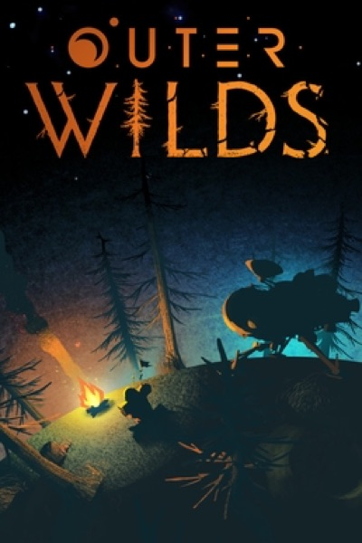

Adventure · 2019
Outer Wilds
A twenty-two minute solar system solved only with knowledge.

Cover: Wikipedia: Outer Wilds
Facts
- Released
- 2019-05-28
- Genre
- Adventure
- Category
- Adventure
- Platforms
- Nintendo, PC, PlayStation, Xbox
- Developers
- Mobius Digital
- Publishers
- Annapurna Interactive
PC requirements
- Minimum
- [object Object]
- Recommended
- [object Object]